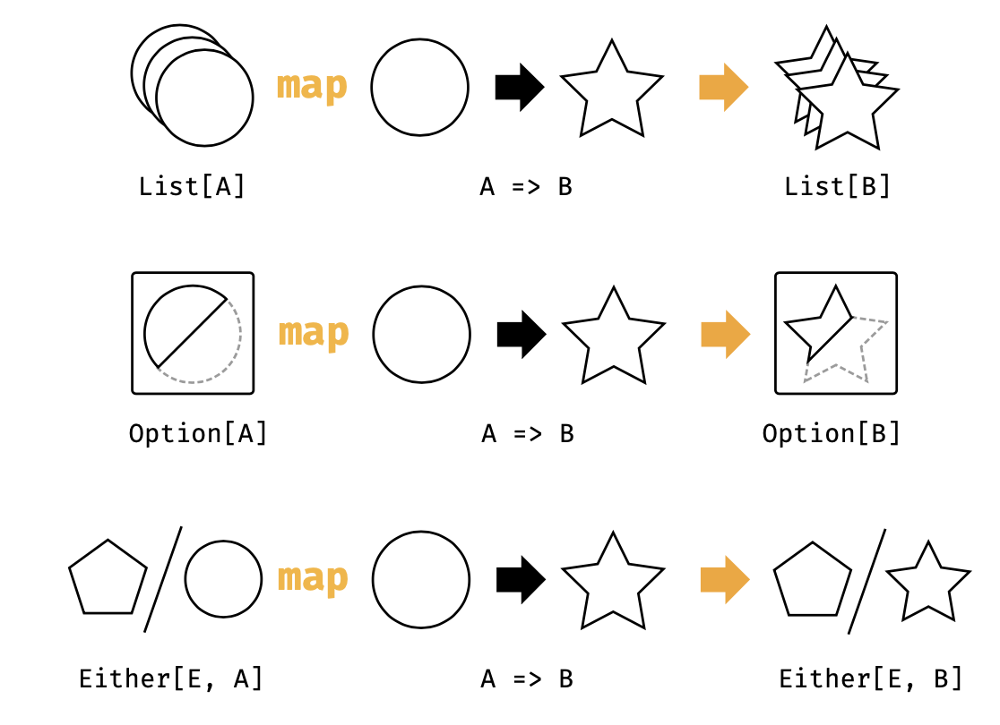

3.1 Funtor的例子
我们可以非正式的认为，一个 functor 其实就是带有 map 方法的任何东西。你可能了解很多种类型都有这个特定：Option， List，以及 Either，并且还可以罗列出不少。 我们第一次偶遇 map 的典型场景是迭代 List 。为了理解 functor，我们需要另辟蹊径来思考这个方法。不同于遍历一个列表，我们需要考虑在一次动作中转换这个列表中的所有值。列表的结构不随着值的变化而变化：
List(1, 2, 3).map(n => n + 1)
// res0: List[Int] = List(2, 3, 4)
类似的，当我们对一个 Option 做map的时候，我们会转换内容，但是留下的 Some 或者 None 的上下文是不变的。类似的原则也同样适合于 Either 留下来的 Left Right 上下文。下图描述了这种类型签名的通用转换。 
- Option有一个值或者没有；
- Either可能有一个值或者一个错误；
- List可能没有值或者有多个值。
#